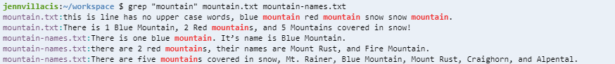
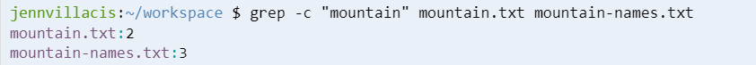
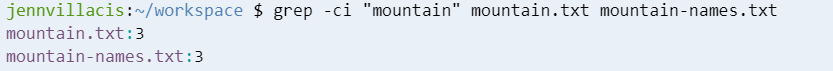
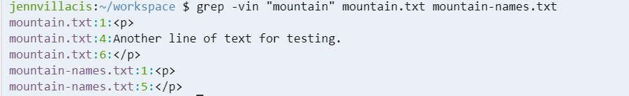

What is Grep?
Grep stands for global regular expression print “ it processes text line by line and prints lines that match the specified pattern. It provides the ability to efficiently filter contents of a file for display. On this page you will find examples of different ways to use grep!
Linux DocumentationSyntax Classification
grep [OPTIONS] PATTERN [FILE...]
Regular expressions and grep
In the pattern portion of the grep command, we put a pattern to be searched for in the given file. For example,
grep ‘kittens’ test_file.txt
will search test_file.txt for the pattern ‘kitten’ and return any lines that contain it.
But what if we want to search for any word that starts with ‘k’ and ends with ‘s’? Or for ‘kittens’, but only if it’s at the beginning of a line? Or if we want to find all phone numbers in a document? Or find all blank lines? Regular expressions give us a lot more power to search for exactly what we want.
^ and $
If we want to specify if the pattern we’re searching for occurs at the beginning or the end of a line, we can use ^ and $ (respectively). These are called anchors. For example,
grep ^A
Will search for lines that start with ‘A’ and
grep A$
Will search for lines that end with ‘A’. If the caret (^) isn’t at the beginning of the pattern, or the dollar sign ($) isn’t at the end of a pattern, they won’t be considered as anchors, and will just be searched for regularly.
[] and [^]
Using square brackets, we can specify a range of characters that we want to match or exclude for one character. This can be done by listing the characters, like [aeiou], or by using a hyphen (‘-’) to specify a range, like [0-9]. Adding a caret to the beginning of the bracket means that the character should not be any of the specified characters. So
grep [aeiou]
Will search for vowels, and
grep [^a-zA-Z0-9]
Will search for characters that aren’t numbers or letters.
. and *
To be more general in our search, we can use a period (.) to stand for any single character, and the asterisk (*) will match zero or more repetitions of the preceding character.
grep ^.$
Will search for lines that contain exactly one character.
grep A*
Will search for any number of repetitions of ‘A’, including none. This command is pretty useless, as it will match all lines in the file. If we want to match one or more repetitions of ‘A’, we should use:
grep AA*
\{x,y\}, \{x\}, and \{x,\}
We saw that the asterisk (*) finds any number of repetitions of a character, but what if we want a specific number of repetitions? Or a range? We can use a backslash followed by a bracket (\{), containing our range to specify this. For example
grep A\{4\}
Will search for the pattern ‘AAAA’
grep ^.\{1,5\}$
Will search for lines that contain between 1 and 5 characters
grep [0-9]\{5,\}
Will search for lines with 5 or more digits in a row.
The backslash '\'
The backslash '\'
You may be wondering, what if I want to search for a dollar sign ($) in my file? Or a period? Or an asterisk? The backslash character (\) allows us to take away the special meaning of the character after it. So
grep \$[0-9]
Searches for a dollar sign followed by a digit, such as $8
grep \.$
Searches for any lines that end in a period.
Options
In the options portion of the command, we can add options which help us find exactly what we need and output it in a way that's helpful. Here's a table of some of the most commonly used, a full explanation of all the options available can be found here
| Option | Description |
|---|---|
| -c | Instead of the normal output, print a count of matching lines for each input file |
| --color | Display the matching strings in color |
| -i | Ignore case distinctions in both the pattern and the input files |
| -n | Prefix each line of output with the line number within its input file |
| -r | Read all files under each directory, recursively, following symbolic links only if they are on the command line |
| -v | Invert the sense of matching, to select non-matching lines |
| -w | Select only those lines containing matches that form whole words |
Examples
| Grep Command | Description |
|---|---|
| grep -r string /file/ | This command with search for “string” in the /file directory recursively |
| grep -c ‘find’ example.txt | This command can report/count the number of times ‘find’ matches for each file |
| grep “string” example.html | Searches for a “string” in the specified file example.html |
| grep -i “string” example.html | Searches for the word “string” case insensitively. It will search for words like “STRING”, “String” |
| grep “string” file*.* | Searches for a string in multiple files with different extensions. This command will search in all files like file.html, file.php, file.txt, etc.. |
| grep “firstword.*lastword” example.html | Searches for all the patterns that start with “firstword” and ends with “lastword” and anything in between |
| grep -n “string” example.html | This command displays the line number which contains “string” in the file example.hmt |
| grep --color “string” example.html | This command will highlight the matches of “string” |
| grep -v string /tutorial/example2 | This command lists all of the lines of the file /tutorial/example2 that does not contain the specific word “string” |
| grep ^string /tutorial/example2 | This command displays all the lines which start with “string” word in the file /tutorial/example2 |
| grep string$ /tutorial/example2 | This command displays all the lines of /tutorial/example2 that end with “string” |
Interactive Cloud9 Examples
Looking for examples you can use on your own? Try downloading these files to an environment with a Unix command line. Here are some example commands so you can see how grep works for yourself:
- grep "mountain" mountain.txt mountain-names.txt
- grep -n "mountian" mountain.txt
- grep -ci "mountain" mountain.txt mountain-names.txt
- grep -vin "mountain" mountain.txt mountain-names.txt
- grep -i "^this" mountain.txt
- grep -i "[0-9] red mountains" mountain.txt
Example Screenshots
   Reading references
Unix Commands SummaryGrep:Basics and Regular Expressions
grep -Unix, Linux Command